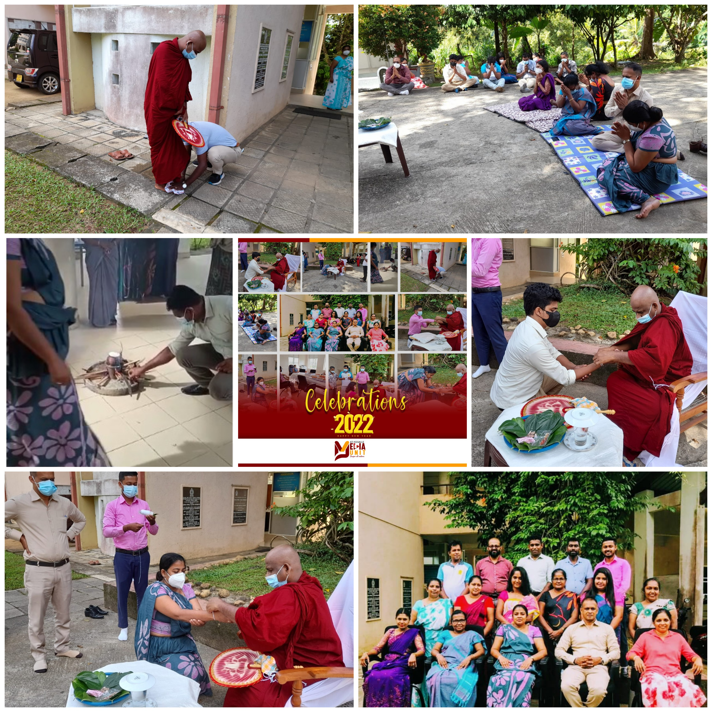
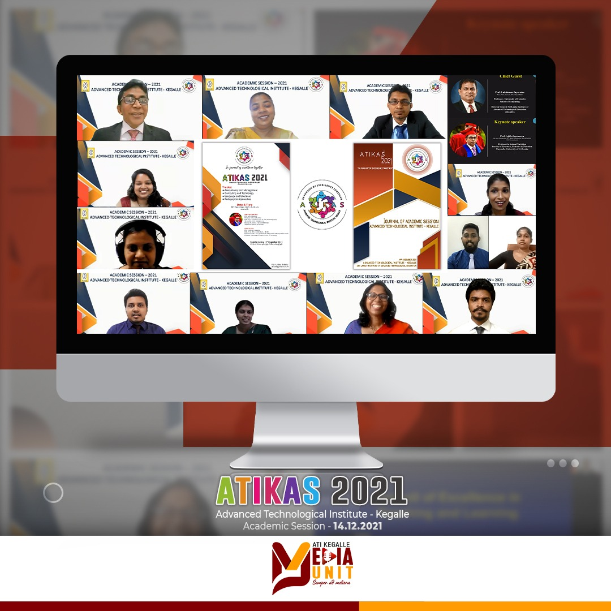
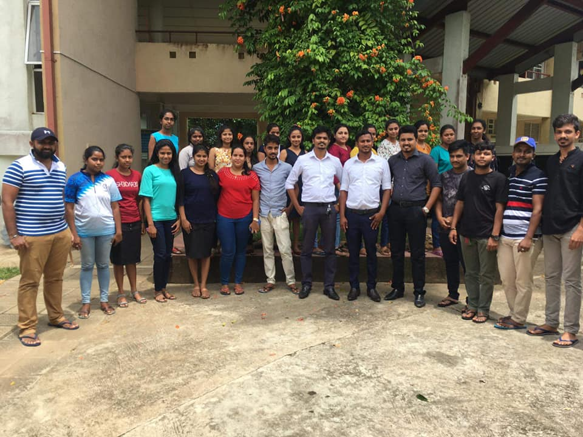
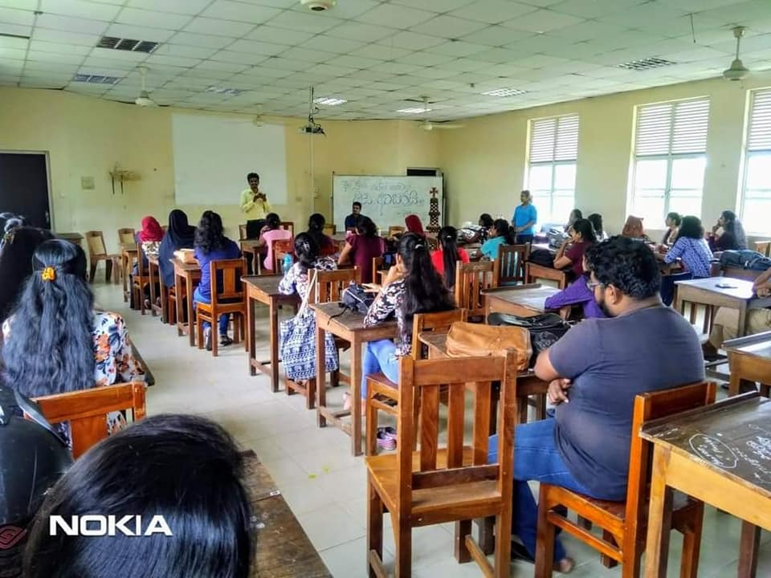
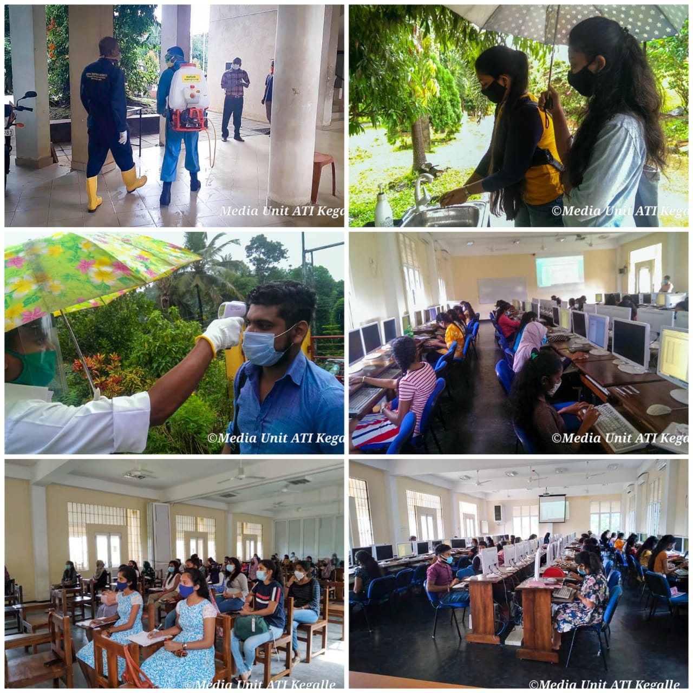
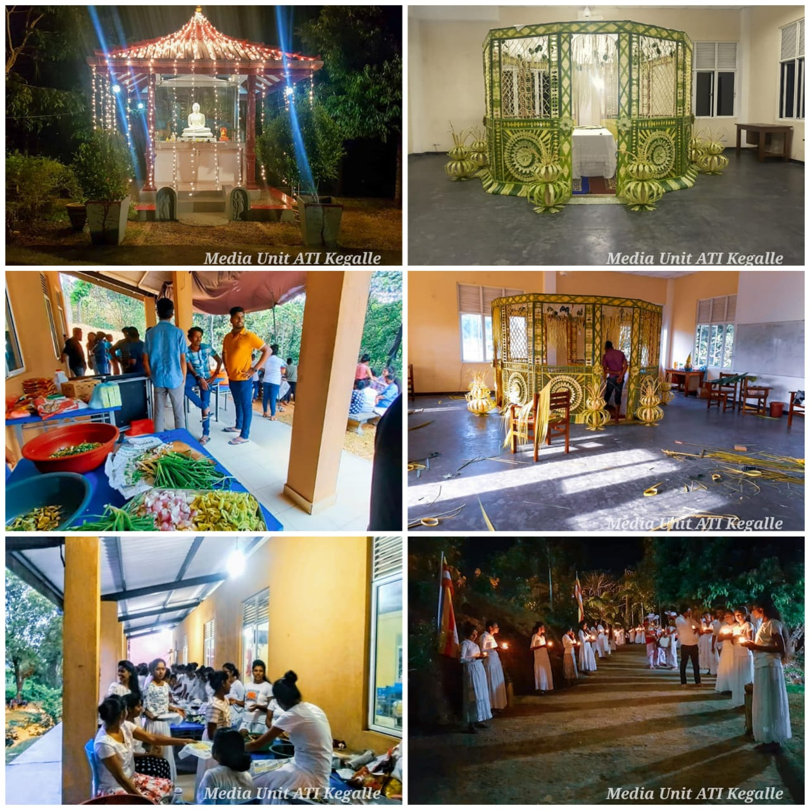
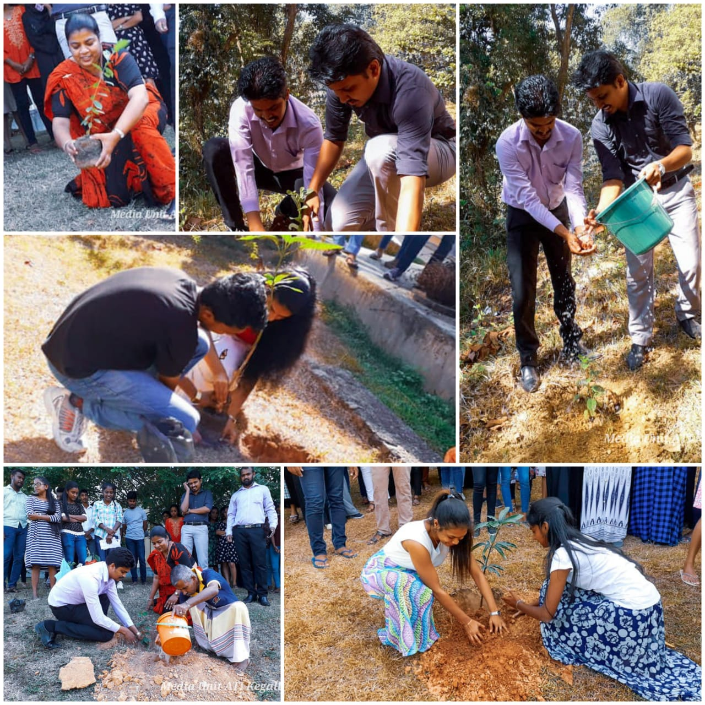
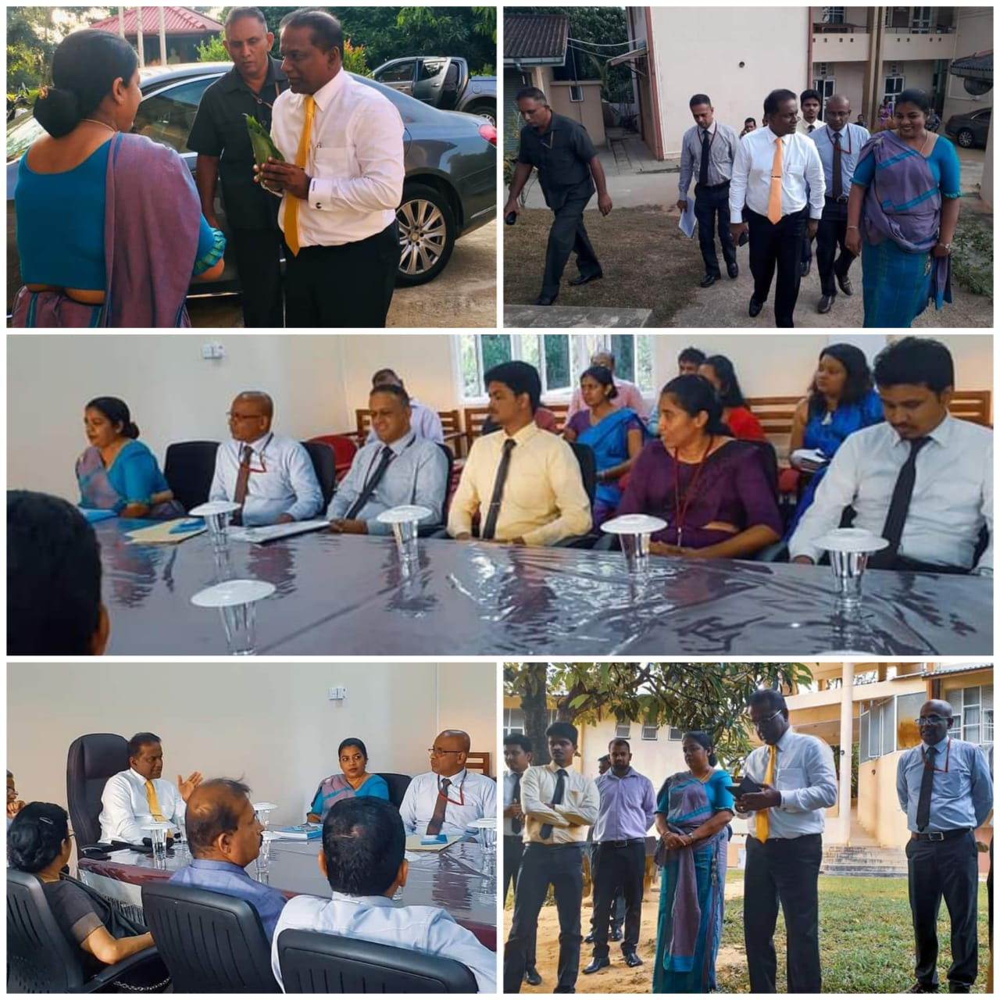

ශ්රී ලංකා උසස් තාක්ෂණ ආයතනය - කෑගල්ල
ශ්රී ලංකා උසස් තාක්ෂණ ආයතනය - කෑගල්ල
Sri Lanka Advanced Technological Institute - Kegalle
இலங்கை உயர் தொழில்நுட்பவியல் நிறுவனம் - கேகாலை
|
Staff members of the ATI Kegalle celebrated the New Year 2022 with new hopes!

" Sumadura Dharma Deshana Programme "
conducted by First-Year students of Higher National Diploma in Information Technology at ATI-Kegalle.
.jpg)
ATIKAS 2021

The inaugural Academic Session organized by Advanced Technological Institute- Kegalle was held on 14th December 2021 on virtual mode.
Themed "In pursuit of excellence together", ATIKAS is an annual multidisciplinary forum that aims to promote a research culture among academics, professionals, and students affiliated with the institute.
The Chief Guest was Prof. Lakshman Jayarathne, Director General of Sri Lanka Institute of Advanced Technological Education. Renowned academic & researcher, Prof. Ajith Jayaweera delivered the keynote address on "Pursuit of Excellence in Teaching and Learning". The session panels were chaired by Senior Lecturer, Dr. D.S. Kalana Mendis and Lecturer
Dr. B. M. A. Pushpakumara from SLIATE.
The organizing committee express their sincere thanks to all who had contributed to making ATIKAS 2021 a resounding success.
“𝗠𝗢𝗡𝗧𝗔𝗚𝗘 - Tʜᴇ Vɪʀᴛᴜᴀʟ Tᴀʟᴇɴᴛ Sʜᴏᴡ (2021)”
Organized by First-Year students of Higher National Diploma in English at ATI-Kegalle.
08.12.2021

Fulfilling its Social Responsibility,
#Advanced_Technological_Institute_Kegalle provides it's four-storied building to Armed Forces and Health Services to set up temporary Covid-19 quarantine center
.jpg)
#New Intake Selection Test/Semester Examination
#Pandemic Period
#Team work 🤗🥰 #ATI_Kegalle Family
.jpg) Thank you so much for your kind support during the New Intake selection test & 2019 Second semester examination while a pandemic situation.
Thank you so much for your kind support during the New Intake selection test & 2019 Second semester examination while a pandemic situation.
You came through, proving what it means to be a "team player."
The extra effort you put in was highly appreciated.
Thank You All!
12th Anniversary Celebration
#Mother ATI KEGALLE
.jpg)
.jpg)
.jpg)
It' not about being the best, It's about being better than we were yesterday... ❤️
#Dharma Deshana
#Donations
- Dried food for Buddha Jayanthi Girls' child development centre
- Lunch & dessert for staff by Mrs. Desi Senarathne
THANK YOU for being a great colleague and
GOOD LUCK with your future endeavors ... 🙏🥰
Farewell At Nishantha De Silva Sir !
#ATI Kegalle Family#
.jpg)
Cheers to Health, Happiness, and Prosperity in the NEW YEAR 2021!
ATI Kegalle Family 🥰🤟🙏
.jpg)
.jpg)
.jpg)
.jpg)
තවත් කණ්ඩායම් දෙකක අධ්යන කටයුතු අවසන් කරන ලදි. නැවත දේශන ශාලාව තුළ ඔවුන් මුණ නොගැසෙනු ඇත.
HNDA 4th Year & HNDPM 2nd Year
 
~ Building Sterilization & Health Facilities.~
COVID-19 Preventive Measures.
SLIATE, ATI Kegalle

වාර්ෂික සෙත් පිරිත් සජ්ජායනය හා දානමය පින්කම
 
2020/02/13 හා 14 වන දින කෑගල්ල උසස් තාක්ෂණ ආයතනයේ
11වන සංවත්සරය නිමිති කර ගනිමින් ශිෂ්ය ශිෂ්යාවන් , අධ්යක්ෂකතුමිය, ආචාර්ය මණ්ඩලය සහා අනෙකුත් සියලූම කාර්ය මණ්ඩලය විසින් සංවිධානය කරනු ලැබු වාර්ෂික සෙත් පිරිත් සජ්ජායනය හා දානමය පින්කම සදහා නන් අයුරින් දායක වූ සියලුම දෙනාට ස්තූතියී....
(ශිෂ්ය මාධ්ය ඒකකය - උසස් තාක්ෂණ ආයතනය කෑගල්ල)
Todaya Kegalle ATI Organized plantation campaign for celebrate
72nd independence day @ 9.00 a.m to 10.00a.m .
Our vision is protect the nature .

Blood Donation camp that we are doing in every year by DA was successfully finished today.
This year we celebrate our 11th anniversary so this camp is so interested to us.
We made nealry 100 blood donors today.
Special thanks to DA for make this happen.


"Dharma deshana"
before the blood donation

Minister of Technology & Innovation Hon.Thilanga Sumathipala
arrived to ATI Kegalle

|
Useful Links
|
APPLICATION DOWNLOAD
|
ATI - Kegalle
Advanced Technological Institute, Kegalle is one of the
Government Institutes for Higher Studies
Advanced Technological Institute,
Bandaranayaka Avenue,
Kegalle.
035 2 221 297
atikegalle@sliate.ac.lk
|
LIKE & SUBSCRIBE US


|
|
© 2020 SLIATE - ACCOUNTANCY GROUP-01 _ ALL RIGHTS RESERVED_
|